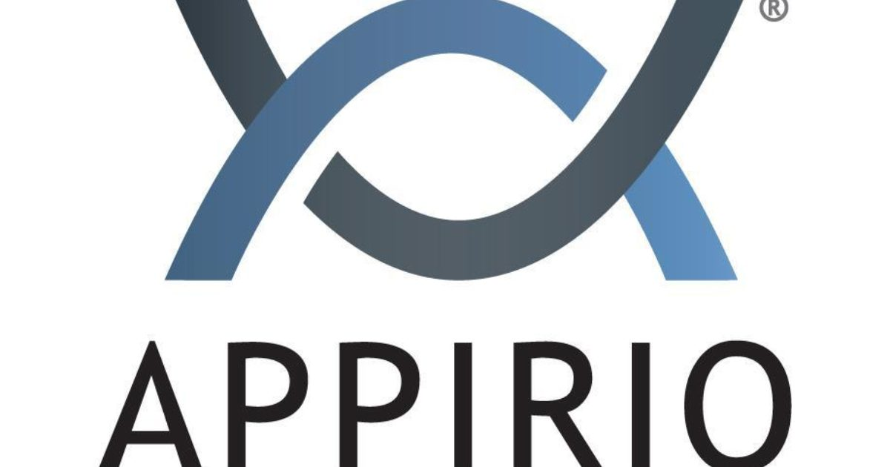

Contact
Hobbies
-
Football -
Voyages -
Pêche -
Musique -
Rando -
Littérature
Marc-Antoine Bouin
Java/Salesforce Full-Stack DeveloperProfil
Développeur accompli et passionné des technologies de l'information, avec de grandes compétences en programmation. Ingénieux et proactif, je suis toujours dévoué à maintenir une connaissance approfondie et actualisée des technologies de l'information, afin de fournir les meilleures solutions pour les besoins de l'entreprise. A court terme, je souhaite étoffer mes compétences autant en front-end qu'en back-end. A long terme, je projette de devenir DevOps, je fais déjà de la veille technologique sur des choses comme l'intégration continue, la virtualisation, la conteneurisation, l'IaaS, et bien d'autres.
Compétences techniques
 Salesforce*
Salesforce*
 Hibernate
Hibernate
 Typescript
Typescript
 Bootstrap
Bootstrap
 SQL DBs****
SQL DBs****
 Spring***
Spring***
 MicroServices
MicroServices
**Java : Java 8 / Java EE / JSF / Tomcat / Maven / Junit / Mockito
***Spring : Core / Boot / MVC / Data / REST / Security
****SQL Databases : Oracle / MySQL
*****IDEs : Eclipse / Visual Studio Code / IntelliJ
******Outils de ticketing : JIRA / Redmine / Salesforce / Bugzilla
Autres Connaissances de base: React / Jquery / Webpack / Grunt / Gulp / Sass / RxJs / Jasmine / ElasticSearch / MEAN Stack / NPM / Apache Kafka
Certifications

AWS Certified Cloud Practioner
Savoir-faire
- CRM (Logiciel Relation Client) (6 ans)
- Call-center (5 ans)
- Comptabilité (4 ans)
- Banque (4 ans)
- Presse (3 ans)
- Téléphonie (1 an)
Langues
- Français: Langue maternelle
- Anglais : Bilingue (6 ans dans des pays anglophones)
- Allemand : Professionel (B2-Level Certificate Goethe Inst.) License #280-Z1-00122-10
- Espagnol : Intermédiaire
Parcours professionel
Java/Salesforce Full-Stack Developer Novembre 2017 – présent
Conserto, Rennes, FranceClient : PSA/Stellantis Mai 2021 – Present
- Développements de modules pour l'espace client de gestion des contrats de PSA Allemagne
- Stack Technique : Allemand, Anglais, Salesforce : Experience Cloud (Communities), Lightning Aura Components (similaire à Angular), JavaScript, Apex (similaire à Java), Git, GitHub, Visual Studio Code
Période d'intercontrat : Projet interne Consertoit Mars 2021 - Avril 2021
- Amélioration et développement d'une application similaire à AirBnb qui aide les collaborateurs à trouver un logement lors de leurs déplacements
- Stack Technique : HTML, CSS, Angular, Java, Spring(Boot, Data, Rest), MongoDB, Docker, Git
Période d'intercontrat : Formation Janvier 2021 - Février 2021
- Formation reçue par des collaborateurs en interne
- Formation interne de 3 jours sur Angular
- Formation interne de 3 jours sur Docker
-
Formation via la plateforme d'e-learning Udemy et obtention de certificats :
GitHub Ultimate: Master Git and GitHub - Beginner to Expert
Zero to Hero in Lightning Web Components
Docker for Java Spring Microservices - DevOps with Docker
Docker for Java Developers
The Complete 2021 Web Development Bootcamp
Node.js, Express, MongoDB & More: The Complete Bootcamp 2021
Docker and Kubernetes: The Complete Guide
Angular & NodeJS - The MEAN Stack Guide [2021 Edition]
Docker & Kubernetes: The Practical Guide
MongoDB - The Complete Developer's Guide 2021
Reactive Programming with Spring Framework 5
Understanding TypeScript - 2021 Edition
Spring & Hibernate for Beginners (includes Spring Boot)
The Complete Angular Course: Beginner to Advanced
Java 8 New Features In Simple Way
Linux Shell Scripting: A Project-Based Approach to Learning
- Stack Technique : Angular, TypeScript, Java, Spring, Hibernate, Node.js, MongoDB, Git, GitHub, Docker, Linux
Client : Precom / Mission : Salesforce Mars 2018 – Novembre 2020
- Implémentation de 10 Business Units indépendantes dans une org Salesforce
- Développement en Apex de règles métiers et Workflows
- Développement de Web Services REST entrants et sortants
- Mise en place d'intégration continue avec Salesforce DX
- Développement en Apex des tests unitaires
- Développement en Apex/REST d'une interface entre Salesforce et CreditSafe pour sirétiser correctement les comptes
- Intégration avec les autres applications du SI
- Implémentation d'un mécanisme SSO (Single Sign-on)
- Stack Technique : Salesforce: Sales Cloud, Lightning Aura Components (similaire à Angular), JavaScript, Apex (similaire à Java), REST Web Services, Salesforce DX, Eclipse, Visual Studio Code
Java Full-Stack Developer Juin 2014 – Octobre 2017
Compta.com, Laval, France- Développement et amélioration en Java des modules du logiciel de comptabilité en ligne Compta.com
- Maintenance évolutive de Compta.com
- Refonte de l'application (Primefaces + Bootstrap)
- Développement en Java d'un workflow de validation de congés
- Développement en Java d'un module de gestion d'emprunts
- Développement en Java du module « Affectation Simplissime » : Ce module permet d'associer automatiquement une ligne de relevé bancaire au bon compte comptable via un algorithme de Machine Learning : Démonstration
- Développement en Java d'un module de relance et recouvrement par huissier : Démonstration
- Développement en Java d'un module de factures périodiques : Démonstration
- Stack Technique: Java, Java EE, Hibernate, HTML, Bootstrap, JQuery, CSS, Oracle, JSF, Primefaces, Eclipse, IntelliJ, SVN
Salesforce.com Full-Stack Developer Octobre 2013 – Mars 2014
 Appirio, Dublin, Irlande- Développement et intégration de solutions Salesforce.com pour différents clients
- Analyse des besoins du client, conception du data model, développement des interfaces visuelles et de la logique métier, production de rapports
- Analyser et améliorer des solutions existantes
- Management de projet en équipe avec la méthodologie Agile
- Stack technique : Agile / HTML / CSS / JavaScript / Apex / Java / Visualforce
Technicien Support sénior Salesforce.com Octobre 2012 – Septembre 2013
Stream Global Services/Salesforce.com, Dublin, Irlande- Aide aux agents de support de niveau 1 pour les requêtes complexes
- Assistance complète pour la partie fonctionnelle de Salesforce.com
- Apports de solutions personnalisées quand les solutions clés en main sont inadéquates
- Knowledge champion: vérification, validation, et publication d'articles soumis par les agents supports dans la base de connaissances
- Stack technique: Salesforce : Sales Cloud, Service Cloud, Experience Cloud, Data Loader
Conseiller client Juin 2011 – Mars 2012
Virgin Mobile/Webhelp, Vitré, France- Traitement des demandes clients à l’échelle nationale, informations sur l’usage du forfait/mobile, propositions de nouvelles offres.
Période non-professionnelle (voyages) Septembre 2010 - Mai 2011
- Voyage en Asie : Thaïlande, Vietnam, Laos, Cambodge, Birmanie, Inde, Népal, Malaisie, Indonésie, Singapour
- Trek de l'Everest, Népal
- Trek des Annapurnas, Népal
Technicien Support sénior Salesforce.com Octobre 2008 – Août 2010
Stream Global Services/Salesforce.com, Dublin, Irlande- Contact support principal pour les entreprises avec plus de 50 licences
- Maintien de la qualité de support des comptes
- Aide aux agents de support de niveau 1 pour les requêtes complexes
- Assistance complète aux clients pour toutes les fonctionnalités du produit
- Informer les clients sur les modules de sécurité, les "best practices", et les nouvelles fontionnalités
- Apports de solutions personnalisées et optimales quand les solutions clé-en-main sont inadéquates
- Mise à jour de la base de connaissances avec des nouvelles questions/réponses
- Stack technique: Salesforce : Sales Cloud, Service Cloud, Experience Cloud, Data Loader
Période non-professionnelle (voyages) Novembre 2007 - Septembre 2008
- Tour du monde : Thaïlande, Nouvelle-Zélande, Australie
- Travail dans les vignes en Nouvelle-Zélande
Agent de support technique Niveau 1 Mai 2006 - Octobre 2007
Hewlett-Packard/CPL, Dublin, Irlande,- Traitement de requêtes techniques: réseaux/serveurs, Windows, messagerie...
- Assistance sur les applications Microsoft: Word, Excel...
- Stack technique: Windows, Réseaux, MS Outlook, MS Excel
Divers petits travaux et étude de l'anglais Novembre 2005 - Avril 2006
Dublin, Irlande- Divers petits jobs à mi-temps dans des supermarchés
- Cours d'anglais à mi-temps
Analyste-programmeur Mars 2005 - Août 2005
 Thales
Communication, Laval, France
Thales
Communication, Laval, France
- Développement d'une application de transfert de données
- Stack technique: C, LabWindows/CVI
Formation
-
2005
Formation E.S.I.COM., Lycée Maupertuis, Saint-Malo, France
Formation d'un an spécialisée dans les systèmes informatisés et de la communication -
2004
BTS Electronique, Lycée Jeanne D’Arc, Vitré, France
Contributions sur le web

Salesforce Trailhead Community

Salesforce Developer Forums

GitHub

Stack Overflow
Réalisations
-
Ce portfolio
Technical stack : HTML5, CSS, Git, GitHub Pages, Visual Studio Code